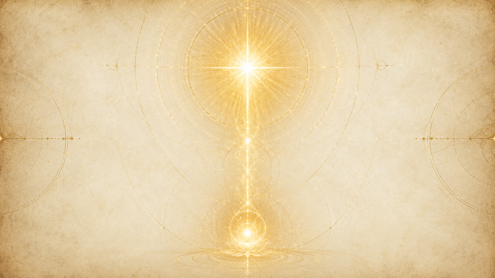
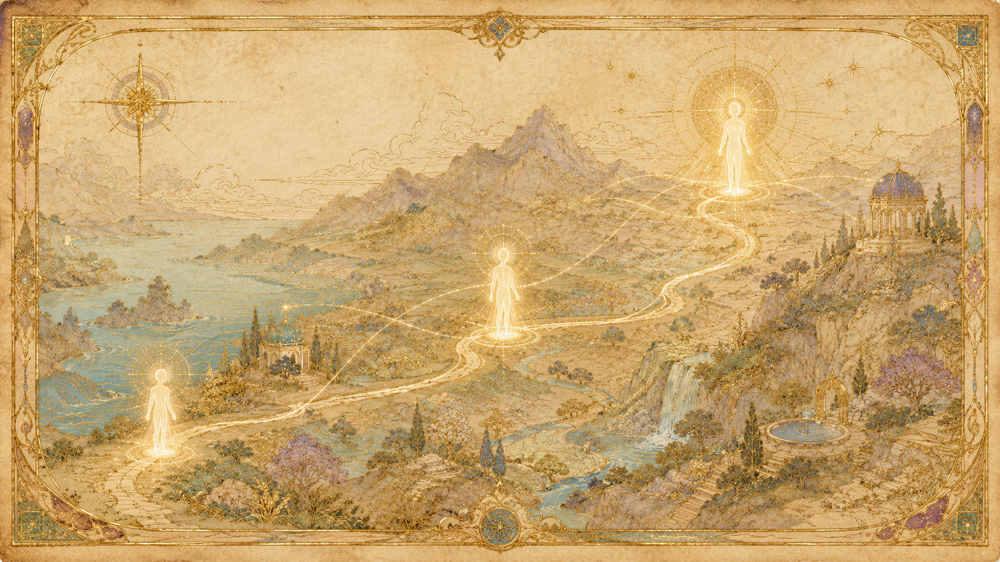
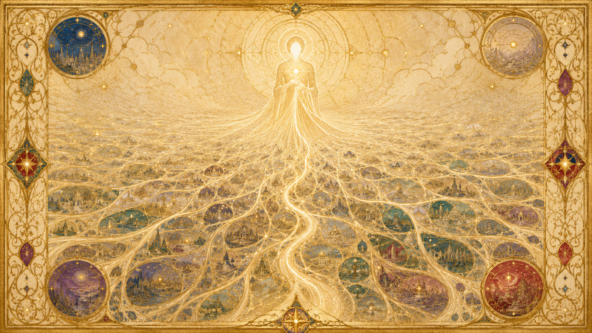
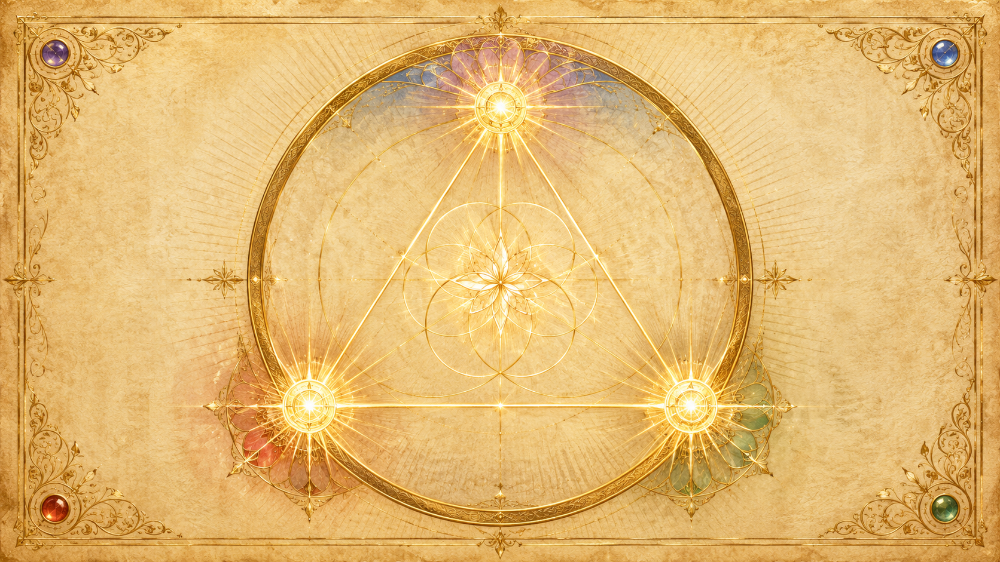

高我:你自己更進化的版本,作為禮物回來
「高我,是那個位於第六密度中段、回過頭來、把這份服務獻給它自己的存有。」

提問者一路追問「高我」到底是什麼。Ra 給的答案非常具體,而且出乎一般靈性說法的意料:高我不是某個外來的天使或守護靈,而是你自己——是你這個心/身/靈複合體一路演化,抵達第六密度中段時的那個版本。它「回過頭來」,把指引這份服務,獻給還在低密度跋涉的自己。
Ra 進一步把它定性為一份「禮物」。在第三十七場,祂說高我是「在第六密度晚期被給予的一個顯化,是來自它未來自身性(future selfness)的一份禮物」。換句話說:當這個存有接近第七密度、即將融入造物者時,它出於「自我對自我的榮耀/責任」(an honor/duty of self to self),創造出這個資源,並把它投射回過去,送給那個還在學習的自己。高我因此不是高高在上的權威,而是更成熟的你,對年輕的你伸出的手。
高我做的事:蒸餾經驗、編寫下一生的功課
那麼這份禮物實際在做什麼?Ra 說,高我會帶著「對該存有所累積經驗的全然理解」,去檢視、蒸餾這些第三密度的學習,並「為更進一步的體驗編寫程式(program)」。也就是說,高我參與了你下一生功課的規劃——它根據你已走過的路,協助安排接下來要遇到的催化劑。
但 Ra 立刻劃下界線:高我能編寫的,只有「功課,以及某些預先設定的限制」;其餘的,完全是每個存有的自由選擇。高我設定的是課程大綱與舞台條件,不是你會怎麼回應、會學到什麼。它像是一位幫你選好下學期科目的自己,但考卷怎麼答,仍然由臨場的你決定。
它在哪個密度、哪個時態:從「你的未來」運作
「你的高我就是處於第六密度中段的你;而以你衡量時間的方式來說,你的高我就是你在未來的自己。」
密度:第六密度中段,正走向第七
Ra 把高我的位置講得很精確:它「位於第六密度之內、相當進階、正走向第七密度」的階段——也就是「第六密度中段(mid-sixth density)」。提問者確認:是不是所有位於第六密度中段以下的心/身/靈複合體,都在第六密度中段擁有一個高我?Ra 答:「正確。」每一個還在演化途中的存有,都有這樣一個位於第六密度中段的自己在等著。
而為什麼偏偏是這個位置?因為第六密度中段,正是正向與負向兩條道路最終匯合為一的那一點。當提問者問起這個對應的理由時,Ra 表示「這部分我們先前已經談過」——高我落在兩條路合一之處,本身就呼應了它「整合一切、把存有引向合一」的角色。
時態:它就是你的「未來自己」
最違反直覺、也最關鍵的一點是時態。提問者一度以為自己「同時存在於兩個地點」——這裡,以及第六密度中段。Ra 修正並擴大了這個理解:「你同時存在於所有層次。」而且明確地說,你的高我「就是你在未來的自己」。指引你的,是更後面的你。
提問者接著陷入一個邏輯難題:如果通往高我的這條漫長演化之路,完全是自由意志的結果,但時間又是幻象、時空與空間之間其實沒有我們以為的那種「時間」,那豈不是說——這整段「造就高我」的經驗,在演化還在發生的「當下」就已經存在了?Ra 沒有簡單地說對或錯,而是點出形上學的核心:在「時空(time/space)」裡,「所有的時間都是同時的」。祂用一個地理比喻:就像你地圖上的城市與村莊,此刻全都同時運轉著、熙來攘往、充滿正在各忙各事的存有——時空裡的自我也是如此,過去、現在、未來的你,全都同時鮮活地存在著。
「決定論與自由意志之間看似的矛盾,在你接受『真正的同時性』確實存在時,就消融了。高我,是該心/身/靈複合體到那一點為止、所經歷的一切發展的最終結果。」
所以高我不是站在時間線終點俯瞰你的旁觀者,而是你一切選擇的「最終結果」本身——它既是你走出來的成果,又同時陪著你走。Ra 也提醒:時空和我們熟悉的時空(space/time)一樣複雜完整,有它自己一整套如同自然律的結構,並非一片均質的混沌。

它如何運作而不違反自由意志:能時護持,被求時指引
「高我不會操縱它過去的諸多自我。它在可能時護持、在被請求時指引,但自由意志的力量始終至高無上。」
不是「操縱」,而是「護持與被求時的指引」
這是整個高我主題裡 Ra 講得最斬釘截鐵的一段。提問者提出一個很自然的猜想:高我是不是在「操縱(manipulate)」它在低密度的那個自己,推著它穿越各密度去累積經驗,最後再把這些經驗收攏、整合進第六密度的高我裡?
Ra 直接否定:「這不正確。」祂把高我的行動界定為兩件事、且只有兩件事——在可能時護持(protects when possible),在被請求時指引(guides when asked)。除此之外它不介入。而貫穿這兩件事的最高原則,是「自由意志的力量始終至高無上」。高我握有你整段未來演化的全貌,卻嚴格地按住自己的手:它不替你走,不替你選,甚至不在你沒開口時主動塞給你方向。
關鍵在「被尋求」:指引只在被召喚時出現
「在被請求時指引」這句話,是高我運作不違反自由意志的核心機制。指引不是自動推送的,它必須被尋求、被召喚,才會啟動。這跟整套一的法則裡反覆出現的原則完全一致:邦聯與 Ra 也是「等待被召喚」,不請自來的協助本身可能就是一種對自由意志的侵犯。高我作為更進化的你,同樣恪守這條線——它在你開口尋求時才給出指引,而不是在你還沒準備好、還沒發出意願時就替你決定。
那麼,要怎麼「尋求」高我?Ra 指出兩條途徑。其一是冥想:透過冥想,可以打開「穿過心智之根(the roots of mind)」的通道或管道,讓存有得以接觸自己的過靈魂與高我。其二是極化:強烈的兩極化會強化「意志」,而意志正是接觸過靈魂的力量來源。但 Ra 也補了一句很重要的提醒:極化本身只是增強了「能力」,並不保證存有真的「想要」這份接觸——願不願意尋求,仍是自由意志的事。
同時性,讓「指引未來的你」不構成強迫
正因為前一節談的「真正的同時性」,高我的指引才不會淪為命定論。高我不是從未來「劇透」一個已寫死的結局給你,因為那段未來本身,是由你此刻一個個自由選擇「正在造就」的。決定論與自由意志的矛盾,就在這裡消融:高我是你選擇的結果,你的選擇也持續形塑著高我——兩者互為因果、同時存在,沒有誰強迫誰。
高我與「魔法人格」:召喚魔法人格,就是召喚高我
「當魔法人格被適當而有效地召喚時,自我便召喚了它的高我。」
魔法人格,就等同於你的高我
在談「魔法人格(magical personality)」的集會裡,Ra 給出了高我與修行實作之間最直接的橋。祂說,魔法人格「是一個合一的存有、是第六密度的存有,並且等同於你所稱的高我」。也就是說,修習者在儀式工作中所披上的那個「魔法人格」,並不是憑空塑造出來的某種角色——它本身就是那個位於第六密度中段的你。
Ra 解釋,魔法人格傳統上帶有「力量、愛、智慧」三個面向,設立這三面是為了教學上的用意:讓初學者不至於濫用手中的工具,而是平衡地立於愛與智慧的中心,進而「為了服務」才去尋求力量。
召喚的機制:在時空與時空之間架一座橋
那麼召喚魔法人格,實際上發生了什麼?Ra 說得很清楚:「當魔法人格被適當而有效地召喚時,自我便召喚了它的高我。」這一刻,「一座橋在時空(space/time)與時空(time/space)之間被架起」,於是那個第六密度的魔法人格,得以在這次工作的期間,「直接體驗第三密度的催化劑」。
這提供了一條與「被動等待被召喚」互補的主動途徑:透過正確的召喚,修習者主動把更進化的自己——高我——請進此刻的第三密度體驗中,讓它的智慧、愛與力量在當下臨場運作。注意,這仍未違反自由意志,因為發出召喚的正是修習者自己。
收尾的紀律:工作結束要把魔法人格「卸下」
Ra 特別強調一個容易被忽略的協定:工作完成後,必須「一絲不苟地」把魔法人格卸下——在心中為之,必要時也可輔以手勢。卸下之後,高我才能恢復它正常的配置。這個收尾不是形式主義,而是讓那座暫時架起的橋妥善關閉,讓臨場的第三密度自我與第六密度的高我各自回到本位。
高我與心/身/靈整體:過靈魂、意義群體
「你可以把你的自我、你的高我或過靈魂、以及你的心/身/靈複合體整體,看作圓上的三個點……全都是同一個存有。」
三個層次:自我、高我/過靈魂、心/身/靈整體
提問者試圖釐清「高我」和另一個 Ra 用語「心/身/靈複合體整體(mind/body/spirit complex totality)」到底是不是同一回事。Ra 把兩者區分開來,又指出它們同源。祂用一個漂亮的空間比喻:把你眼下的「自我」、你的「高我(也就是過靈魂 Oversoul)」、以及你的「心/身/靈複合體整體」,看成同一個圓上的三個點。三個點看似分立,但 Ra 給出結論:「全都是同一個存有。」
整體是「資源」,高我從中取材編寫功課
那這三者怎麼分工?Ra 說,心/身/靈複合體整體,扮演的是高我的「一項資源」。這個整體不是一個明確的單一個體,而更像是一片「流動的沙」、是「平行發展的集合」——它把這個存有所有可能、或然的經驗路徑全都涵納在內,像一座蘊藏一切可能性的庫。高我則從這座庫裡取材,帶著對全部累積經驗的理解,去蒸餾學習、為下一段體驗編寫程式。簡單說:整體是「素材的總和」,高我是「運用素材、把你引向成熟的那個你」。

意義群體:社會記憶複合體也有它的過靈魂
高我與過靈魂不只屬於個人。提問者問:多個存有會不會共享一個整體?Ra 確認:個別與集體的可能性都存在。最值得注意的是——當一顆行星上的眾存有成為一個「社會記憶複合體」時,這個結合而成的群體整體,也擁有它自己的過靈魂。
而這種集體過靈魂的形成,不是簡單相加。Ra 援引那條反覆出現的原理:「整體大於部分之和。」群體的過靈魂是透過某種「加倍(doubling)」而非單純累加而生——換句話說,當許多存有的覺知真正合一,所湧現的過靈魂帶有一種超越個別總和的、群體性的存有性。個人有高我,合一的群體也有屬於它的高我層次。
死亡時刻的護持
高我在演化的關鍵節點也在場。Ra 在談收割的督導時提到,第一層的督導,正是「該存有的心/身/靈複合體整體,或說高我」;它與那些因存有內在尋求而被吸引來的內在界存有一起,在過程中提供支持。死亡並不需要繁複的儀式——周圍的人只需釋放、並讚頌這個過程;高我與內在界存有以「護持」的姿態,陪伴存有通過這道自然的門戶。
它是真實存有,還是抽象概念?
「高我,是來自它未來自身性的一份禮物……是一個無限複雜的思想形態。」
Ra 的立場:真實,不是抽象的比喻
這是這一章最容易被誤解、也最需要釐清的一點。一般人很容易把「高我」當成一種勵志式的修辭——「你內在更好的版本」這類抽象概念。Ra 的回答相反:高我是真實的,不是抽象的概念。它是「在第六密度晚期被給予的一個顯化,是來自它未來自身性的一份禮物」;它擁有自己的身體複合體、自己的載具。它是一個確實存在、有其存有性的存在,只是存在於第六密度中段的時空之中。
「思想形態」不等於「不真實」
Ra 同時把高我描述為「一個無限複雜的思想形態(an infinitely complex thought-form)」,是第六密度存有所運用的資源。乍看「思想形態」像是在說它只是個念頭、不夠真實——但在一的法則的形上學裡並非如此。整個造化本就是造物者的思想所顯化;說高我是思想形態,是在描述它的「組成材質」屬於更精微的時空層次,而不是在否定它的真實性。它是帶有意識、承載著該存有全部經驗的真實存有,而非單純的抽象符號。
同一個存有的三個面向
那麼「真實存有」與「同一個你」如何並存?關鍵還是回到那個圓:自我、高我/過靈魂、心/身/靈整體,是同一個圓上的三個點,「全都是同一個存有」。高我既是一個真實、獨立運作、有自己載具的第六密度存有,同時又完完全全就是你——是你一切發展的最終結果,也是你在未來的自己。它的真實性與它「就是你」這件事,並不衝突。

幾乎都是正向取向
還有一個細節值得一記:Ra 指出,高我傾向於正向取向——「沒有任何負向取向的心/身/靈複合體達成過過靈魂的顯化。」這呼應了第六密度中段是兩條路匯合之處:能走到那個位置、能成為高我的,終究是朝向合一的存有。至於這份指引在個別存有身上會如何顯現,則仍由各自當下的選擇決定。